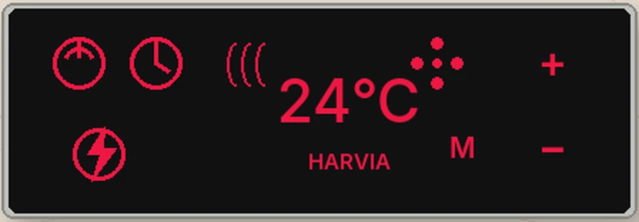

Från dokument till intelligent fastighetskunskap
De flesta fastigheter har dokumentation.
Lakeside Villa & Spa går längre.
Ritningar, utrustningsinformation, renoveringshistorik, underhållshistorik, tekniska fotografier, manualer och driftskunskap har digitaliserats och strukturerats i ett intelligent fastighetsregister.
Resultatet är inte bara ett arkiv. Det är fastighetskunskap som kan sökas, förstås och användas med hjälp av AI.

Användbart när det behövs
Fråga villan. Få ett dokumenterat svar.
Tryck på strömknappen på väggpanelen, ställ in temperaturen och räkna med ungefär en timme för bastun att nå 80 °C.
- När servades det här systemet senast?
- Vad ändrades under renoveringen?
- Vilket underhåll står näst på tur?
Fråga villan
Villa Assistant gör den här kunskapen lättare att utforska. Den svarar utifrån dokumenterad fastighetsinformation i stället för att gissa.
Öppen åtkomst ger användbar information om villan, dess system och dokumenterade historia. Mer detaljerad teknisk information och information för due diligence kan göras tillgänglig genom verifierad fastighetsåtkomst. Driftskunskapen förblir tillgänglig för ägaren.
Byggd för att följa fastigheten
En framtida ägare får inte bara fastigheten, utan också dess operativa kunskap.